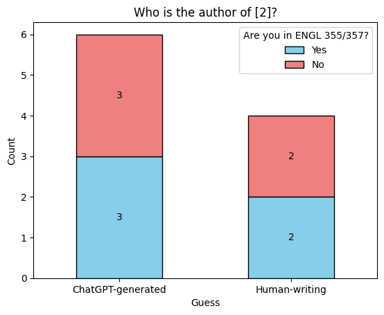
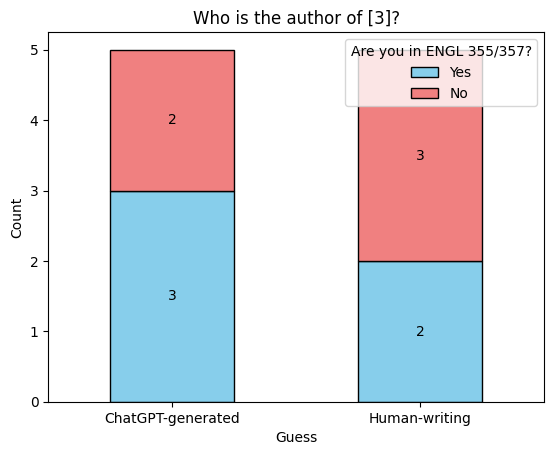
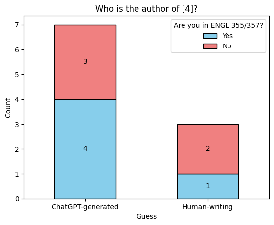

[1] This paper offers a concise review of recent progress in neuromorphic computing algorithms and applications. Examining state-of-the-art methodologies, we delve into the underlying principles and highlight diverse applications across domains such as robotics, image and speech recognition, and natural language processing. This synthesis aims to serve as a valuable resource for researchers and practitioners, providing insights into the current landscape and guiding future developments in this rapidly advancing field.
Can Generative AI write a good text?
Recently, many students have been using generative AI such as ChatGPT or Bing Chat. Some people worry about GenAI too much while some people do not care about it at all. Throughout the ENGL355 Public-Facing Project, I want to check does all worries are acceptable.This website surveys students at UTK to find out their perceptions of ChatGPT, one of the GenAIs, by examining whether they use ChatGPT in their writing and why they do or do not use it. In addition, the survey presents texts generated by ChatGPT and texts written by humans to check whether these texts can be distinguished.
This website was designed for most devices such as desktops, tablets, and mobiles.
To enable dark mode, try button at the top right corner. Feel free to browse the website using the menu bar at the top of the page!
- Home : Introduce this webpage and the topic of ENGL355 Public-Facing Project.
- Usage : Throughout graphs, show how people use or do not use GenAI in their writing.
- Perception : Show the challenges or limitations of using GenAI and see how many people can correctly match the text's writer.
- Analysis : Analysis of what GenAI can and cannot do in writing using ChatGPT-generated texts.
- Fact Check : Based on the analysis in both survey and text, figure out what is true and what is false among the perceptions.
Graphs
Graphs
Graph 1

Graph 2
Graph 3
Analysis
Analysis
üìãOverview
- 5 out of 10 people who responded to the survey prefer to use ChatGPT for writing.
- People who prefer to use GenAI tend to think that GenAI will have a significant impact on their writing, while people who do not prefer to use GenAI tend to believe that GenAI will not have much of an impact on their writing.
- People who use GenAI for writing want to get general ideas or benefit from it as an auxiliary writing tool, such as general ideas, word choice, and rephrase sentences.
- People who don't use GenAI for writing either don't need help from GenAI or aren't satisfied with its performance.
üìàGraph 1
- Half of those surveyed preferred to use GenAI for writing.
üìàGraph 2
- The metric by which people think GenAI impacted their writing is roughly evenly distributed. The average score was 3.2.
üìàGraph 3
- Those who prefer to use GenAI for writing greatly appreciate its impact.
✔What is the primary reason for using GenAI?
- To get a general idea or word references
- To find synonyms and think of different ways to phrase sentences
- To get an assist of grammar or form
- Outline, Synonyms, Dividing Paragraphs, Grammar Checker, Citation Help
❌What is the primary reason for NOT using GenAI?
- Prefer Grammarly
- Prefer certain writing style
- Difficult to get it work the way I want
- No desire to use it
- Do not want to rely on it
Graphs
Graphs
Graph 1 - The text is from ChatGPT
Graph 2 - The text is from Frankenstein; Or, The Modern Prometheus by Mary Wollstonecraft Shelley (Chapter 15)

Graph 3 - The text is from The War in the East: Japan, China, and Corea by Trumbull White (p375)

Graph 4 - The text is from ChatGPT

Analysis
Analysis
üìãOverview
- Typical reasons why people are reluctant to use ChatGPT include Word Choice, Difficulty of writing prompts, and poor results of ChatGPT.
- People tend to pay attention to word choice, connections between sentences, and point of view when distinguishing whether a text was written by a person or ChatGPT.
- Graph 1 shows that a good prompt can help ChatGPT produce quality writing.
- Graphs 2 and 3 show that even if the writing is written by a person, from the reader's perspective, if the sentence connection is awkward or the choice of words is strange, it makes readers feel the text is written by ChatGPT.
- Graph 4 reveals that ChatGPT may still be lacking in writing texts such as essays.
❌Challenges or Limitations of using GenAI
- Word Choice
- Sometimes it provides non-professional vocabulary
- Sometimes it provides too formal
- Mismatch the tone
- Prompt
- Need to be specific and precise with prompt
- Does not fully understand the prompt
- Repetitive
- Answer in the same context is given even if the prompt changed
- Difficult to get diverse answers
✔Decision of Human-Writing vs ChatGPT-generated
- What People consider to determining writer
- Vocabulary, Tone, and Format
- Sentence Structure
- Point of View
- People think ChatGPT...
- Use more descriptive word
- Use creative flow and narration
- Use choppy or changed direction
- Do NOT use Semi-colon
- Create boring texts
- People expect Human writers...
- Use smooth flow
- Use good structure of introduction, elaboration, and conclusion
üìàGraph 1
- This text was designed to see how much help ChatGPT can provide when writing informative text such as research reports, especially when writing abstracts.
- The correct answer rate for the first problem was 20%, the lowest among the four problems.
üìàGraph 2
[2] “My heart beat quick; this was the hour and moment of trial, which would decide my hopes or realise my fears. The servants were gone to a neighbouring fair. All was silent in and around the cottage; it was an excellent opportunity; yet, when I proceeded to execute my plan, my limbs failed me and I sank to the ground. Again I rose, and exerting all the firmness of which I was master, removed the planks which I had placed before my hovel to conceal my retreat. The fresh air revived me, and with renewed determination I approached the door of their cottage.
- This text sought to determine whether readers could determine narrative text written in an unfamiliar way was human-written.
- Unfamiliar sentences caused unnaturalness, which led only 40% of people to believe that the text was written by a person.
üìàGraph 3
[3] Occupying about the same latitude as Italy, Corea is also, like Italy, hemmed in on the north by mountain ranges, and traversed from north to south by another chain. The whole peninsula is very mountainous, some of the peaks rising to a height of eight thousand feet.
The climate of the country is excellent, bracing in the north, with the south tempered by the ocean breezes in summer. The winters in the north are colder than those of American states in the same latitude, and the summers are hotter. The heat is tempered by sea breezes, but in the narrow enclosed valleys it becomes very intense. The Han is frozen at Seoul for three months in the year, sufficiently to be used as a cart road, while the Tumen is usually frozen for five months.
- This text was written by a person and is quoted in the sense that it takes the form of a general essay.
- Although 50% of respondents identified that this post was written by a human, the remaining 50% guessed that it was generated by ChatGPT based on the unnaturalness of the text.
üìàGraph 4
[4] The Civil War, spanning 1861-1865, was a defining chapter in American history. Rooted in sectional tensions over slavery and states' rights, it culminated in a devastating conflict between the Union and the Confederacy. Battles like Gettysburg and Antietam left indelible marks on the nation's psyche. President Lincoln's Emancipation Proclamation transformed the war's purpose, making the abolition of slavery a central goal. The war's aftermath witnessed the struggle for Reconstruction and the challenge of rebuilding a fractured nation. The Civil War's impact echoes through time, shaping the trajectory of American society and politics, and underscoring the enduring struggle for justice and unity.
- This text was written to understand how much ChatGPT can help people write their essay.
- I asked ChatGPT to write a 100-word essay on the topic of the Civil War, and it was quite well structured.
- However, 70% of people who noticed some of the unnaturalness of this post successfully guessed that it was written by ChatGPT.

Example 1
subtitle
This is example 1.Example 2
subtitle
This is example 2.
Positive Perceptions
Example 1
subtitle
This is example 1.
Negative Perceptions
Example 2
subtitle
This is example 2.